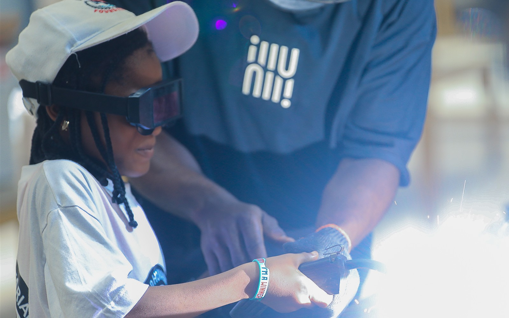
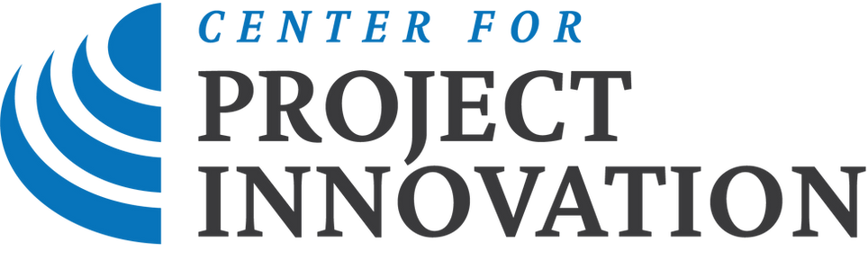
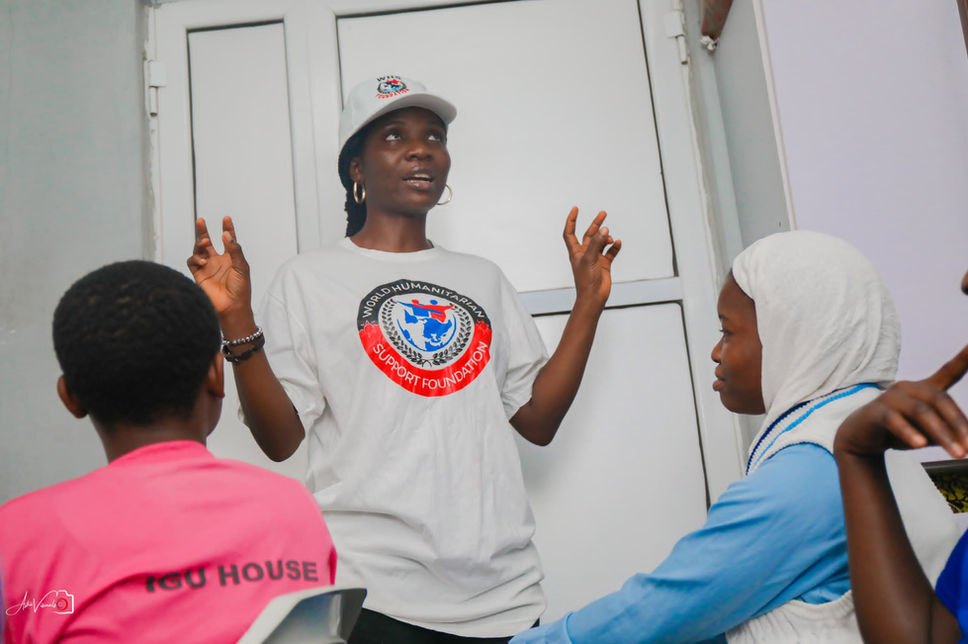
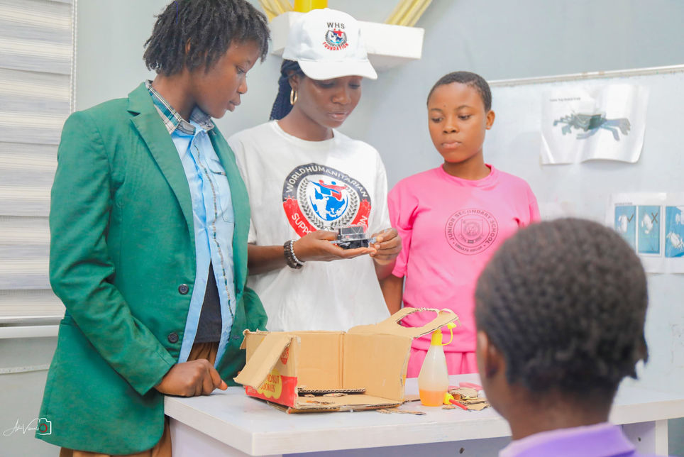
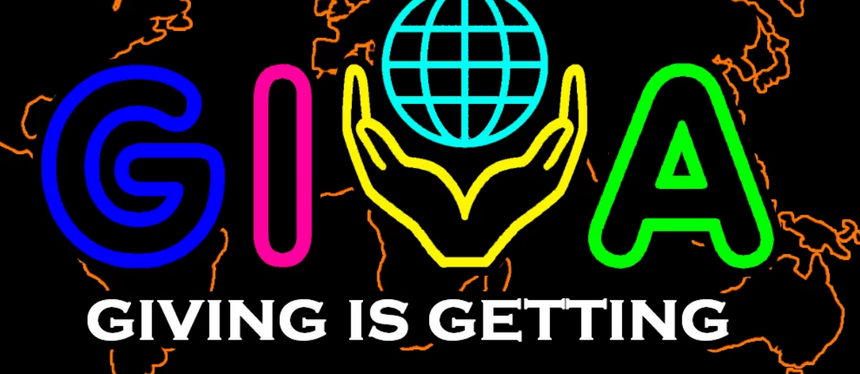
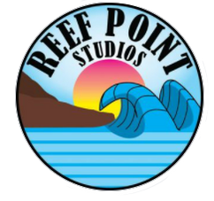
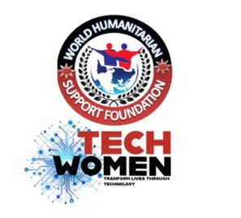

Start or continue learning with WHSF e-Classroom.
Explore technology training in robotics, cybersecurity, drone technology, AI, STEM, eHealth and accessibility technology.
Humanity in action
We empower women and girls in technology, bridge the digital divide and create a more inclusive, sustainable and tech-driven future.

People firstHuman dignity guides every initiative.
Locally informedCommunities shape lasting solutions.
Globally connectedPartnerships turn ideas into action.
Find your WHSF path
Whether you are a student, volunteer, mentor, donor, school, partner or certificate checker, choose the option that best describes you and get a clear next step.
Explore technology training in robotics, cybersecurity, drone technology, AI, STEM, eHealth and accessibility technology.
 Technology • Inclusion • Opportunity
Technology • Inclusion • Opportunity
Featured project
We ensure a more inclusive, sustainable and tech-driven future for women and girls in ICT by bridging the digital divide and promoting gender equality.
WHSF has empowered more than 2,500 young women through technology education, entrepreneurship exposure, mentorship and global networking opportunities. Our holistic approach helps girls and young women build confidence, develop practical skills and access pathways into innovation, enterprise and employment.
View all programmesWho we are
WHSF is a registered California nonprofit organisation, established in the United States in June 2015 and subsequently registered in Nigeria in 2021. Our programmes have also extended to Malawi and South Africa. World Humanitarian Support Foundation has been in special consultative status with the United Nations Economic and Social Council (ECOSOC) since 2026.
Our aim is to provide humanitarian support through poverty alleviation by maintaining human dignity, enhancing communities, and developing children and adults to reach their full potential.
We confront poverty and inequality through a tech-forward approach, integrating digital innovation with agricultural empowerment. Our work focuses on community development, youth and women’s empowerment, children’s wellbeing and inclusive education—ensuring that no one is left behind.
Technology is a catalyst for transformation. Through ICT programmes and training, we open pathways into STEM careers, entrepreneurship and digital literacy, particularly for girls and women.
Discover our programmes →Provide humanitarian support, alleviate poverty and strengthen communities.
A world where poverty is eradicated and every person can reach their fullest potential.
Our mission supports inclusive, sustainable development and shared prosperity.
Our programmes
Our technology and education programmes help girls and young women participate, lead and build solutions for their communities.
A climate-focused, gender-responsive programme equipping rural and peri-urban girls aged 12–24 with practical skills in climate-smart agriculture, sustainability and applied technology.
Girls in the ICT Club and TechWomen explore robotic automation, AI detection and tracking, and autonomous VTOL technology through practical exposure.

WHSF’s partnership with the Center for Project Innovation in Washington, D.C. has supported ten scholarship awards and widened access to professional development opportunities.

Hands-on robotics classes help girls build confidence, explore engineering concepts and develop practical problem-solving skills in STEM fields.
WHSF uses drone technology to bring un-educated and out-of-school girls from rural communities back into learning. The programme contributes to WHSF’s wider impact of reaching more than 7,500 girls across Nigeria and other African countries through practical technology and education programmes.

WHSF promotes girls’ participation in ICT by creating safe learning spaces, mentorship pathways and opportunities for practical digital literacy.
Community impact through technology
WHSF introduces drone technology as a practical bridge between curiosity, education and opportunity for girls in rural communities.
Through demonstrations, hands-on learning, entrepreneurship exposure and mentorship, WHSF encourages un-educated and out-of-school girls to return to learning, build digital confidence and see a future for themselves in STEM, enterprise and meaningful work.
Community impact through technology — WHSF Drone Tech Programme
Technology for education, confidence and opportunity
WHSF Innovation
Our innovation work explores how responsible AI and accessible digital services can support sustainable organisations and better human experiences.
A smarter way to manage sustainable and guest-centred hospitality.
WHSF TechBridge
WHSF TechBridge is a proposed technology empowerment programme designed to connect access to education for out-of-school, uneducated and rural girls and young women through devices, sustainable technology, remote connectivity, livestream classrooms and partner-supported learning.
When girls gain access to devices, teachers, digital skills and mentors, technology becomes a pathway to education, enterprise and dignity.
Collect donated laptops, tablets, phones, solar chargers and safe electronics for learners, rural classrooms and community technology clubs.
Connect learners in underserved communities to WHSF e-Classroom, downloadable lessons, offline resources and low-bandwidth learning support.
Connect students and teachers from advanced countries through livestream classes, mentorship sessions, virtual workshops and career talks.
Promote repair, reuse, solar-powered learning kits, e-waste responsibility and climate-smart technology for rural education spaces.
Create virtual rooms and conference spaces where donors, partners and ethical brands can showcase products, support training and sponsor learners.
Link digital skills to entrepreneurship, remote work readiness, project management, eHealth, data skills, agritech and local income opportunities.
Nonprofit sustainability model
Revenue should support the mission, not replace it. WHSF can create earned-income pathways that fund free access for vulnerable learners.
Gallery
Moments from our technology, education and community programmes with girls and young women.
Girls and young women participating in WHSF technology and education programmes.
How we create value
We focus on practical initiatives that can be tested, improved and strengthened through collaboration.
Understand lived experience and local priorities.
Shape solutions with communities and partners.
Turn ideas into useful programmes and services.
Measure progress and improve what comes next.
Take part
Build programmes, pilots and long-term collaborations with WHSF.
Start a conversation →Contribute your time, experience and ideas to meaningful initiatives.
Register your interest →Help humanitarian and community-led work reach more people.
Support our mission →Volunteer recognition
Connect with WHSF
Contact WHSF for partnership, volunteering, e-Classroom support, certificate help, programme enquiries, safeguarding concerns or responsible innovation.
Scammers have misused the WHSF name, logo and images to create fraudulent Facebook pages and WhatsApp groups. WHSF is not offering financial promotions. Please report suspicious activity to your local authorities.
Partners and collaborators
These partner and programme logos were migrated from the current WHSF website so the new portal reflects the foundation’s existing collaborations and programme ecosystem.


